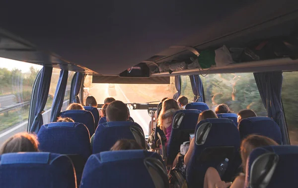

Nuestra Historia
Descubre cómo comenzamos y hacia dónde vamos
Desde 2010, Cielo Tico ha sido sinónimo de excelencia en el transporte turístico en Costa Rica. Nacimos con la visión de ofrecer una experiencia de viaje única, combinando comodidad, seguridad y el espíritu aventurero que caracteriza a nuestro país.
Lo que comenzó como una pequeña empresa familiar ha crecido hasta convertirse en una de las compañías más confiables del sector turístico costarricense, sirviendo a miles de visitantes nacionales e internacionales.
Nuestra Misión
Proporcionar un servicio de transporte turístico de alta calidad, seguro y confortable, que permita a nuestros clientes disfrutar de la belleza natural de Costa Rica mientras viajan.
Nuestra Visión
Ser la empresa líder en transporte turístico en Costa Rica, reconocida por nuestra excelencia en el servicio, compromiso con la sostenibilidad y la satisfacción de nuestros clientes.
Nuestros Valores
Seguridad
La seguridad de nuestros pasajeros es nuestra prioridad número uno.
Compromiso
Nos dedicamos a brindar el mejor servicio a nuestros clientes.
Sostenibilidad
Nos comprometemos con el medio ambiente y el turismo responsable.
Confianza
Construimos relaciones duraderas basadas en la confianza mutua.